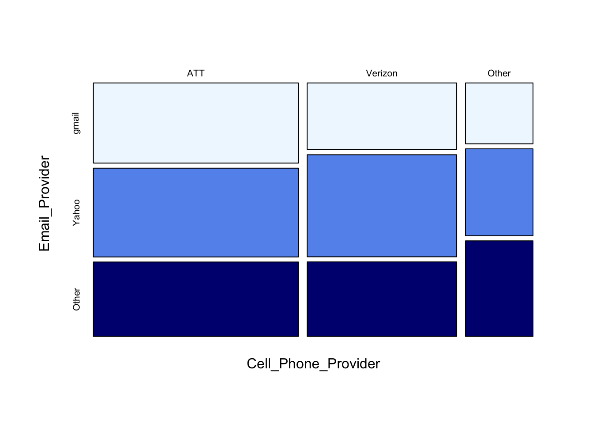

Ch. 14 Chi Squared Test
Sections covered: 14.3
14.3 Two-Way Contingency Tables
Skip: pp. 639-643, including “Testing for Homogeneity”
Focus on “Testing for Independence (Lack of Association)”
Notes on the chi square test formula on p. 644:
Write the null hypothesis as a sentence, not as in the book. (For example: “Class and Survival Status are independent.”)
“estimated expected” in the textbook is the same as “expected” used in class
I and J refer to the number of rows and columns in the table

R
The chisq.test() function requires that data be in matrix form:
# p. 647, #28
mat <- matrix(c(28, 17, 7, 31, 26, 10, 26, 19, 11), nrow = 3, byrow = TRUE)
dimnames(mat) <- list(`Email_Provider` = c("gmail", "Yahoo", "Other"),
`Cell_Phone_Provider` = c("ATT", "Verizon", "Other"))
chisq.test(mat, correct = FALSE)##
## Pearson's Chi-squared test
##
## data: mat
## X-squared = 1.5074, df = 4, p-value = 0.8253To see the expected values:
## Cell_Phone_Provider
## Email_Provider ATT Verizon Other
## gmail 25.26 18.42 8.32
## Yahoo 32.54 23.74 10.72
## Other 27.20 19.84 8.96Mosaic plot

See this tutorial for more on mosaic plots.
Practice Exercises
- (Class example) We took a survey involving 20 children and 80 adults. 1 of the children and 49 of the adults drink coffee, while the remainder do not. Does there appear to be a relationship between age (child vs. adult) and coffee drinking status (yes vs. no)?
[Ans]
## [,1] [,2]
## [1,] 1 19
## [2,] 49 31##
## Pearson's Chi-squared test
##
## data: x
## X-squared = 20.25, df = 1, p-value = 0.000006795- (Hypothesis Testing) In an investigation of alcohol use among college students, each male student in a sample was categorized both according to age group and according to the number of heavy drinking episodes during the previous 30 days.
| 18-23 | 21-23 | \(\geq\) 24 | |
|---|---|---|---|
| None | 357 | 293 | 592 |
| 1-2 | 218 | 285 | 354 |
| 3-4 | 184 | 218 | 185 |
| \(\geq\) 5 | 328 | 331 | 147 |
Does there appear to be an association between extent of binge drinking and age group in the population from which the sample was selected? Carry out a test of hypotheses at significance level .01. (Testbook 14.25)
[Ans]
\(α = .01\)
\(H_0\): the extent of binge drinking and age group are independent
\(H_A\): the extent of binge drinking and age group are not independent.
## [,1] [,2] [,3]
## [1,] 357 293 592
## [2,] 218 285 354
## [3,] 184 218 185
## [4,] 328 331 147# optional: give names to the rows and columns
dimnames(data) <- list(`Episodes` = c("None", "1-2", "3-4", ">= 5"),`Age Group` = c("18-23", "21-23", ">=24"))
data## Age Group
## Episodes 18-23 21-23 >=24
## None 357 293 592
## 1-2 218 285 354
## 3-4 184 218 185
## >= 5 328 331 147##
## Pearson's Chi-squared test
##
## data: data
## X-squared = 212.91, df = 6, p-value < 0.00000000000000022Alternatively, we can use R as a calculator.
total <- sum(data)
prob <- data/total
expected <- data # initialize matrix "expected" to be the same size as "data"
for (i in 1:4){
for(j in 1:3){
expected[i,j] <- sum(prob[i,])*sum(prob[,j])*total
}
}
chisq <- sum((data-expected)^2/expected)
chisq## [1] 212.9072\(p-value < .01\)
Reject \(H_0\). There is an association between extent of binge drinking and age group in the population from which the sample was selected.